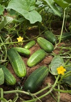

きゅうり（胡瓜）の生産量 都道府県ランキング
1位から3位までと、とれた量
きゅうりが日本でいちばん多くとれるのは宮崎県です。5万8,700 tで、全国（50万2,900 t）の12%を占めます。

| 順位 | 都道府県 | 収穫量 | 全国に占める割合 |
|---|---|---|---|
| 1位 | 宮崎県 | 5万8,700 t | 12% |
| 2位 | 群馬県 | 5万800 t | 10% |
| 3位 | 埼玉県 | 4万400 t | 8.0% |
この数字について
- 分類：ウリ科
- 全国の収穫量：50万2,900 t
- この数字が表すもの：収穫量（畑や田でとれた重さ）
- 調査：作物統計調査 作況調査（野菜） 令和6年産
- 43県分を調査（調査していない県は順位に入りません）
きゅうりの生産量について、よくある質問
- きゅうりの生産量が日本一の都道府県はどこですか？
- 宮崎県です。作物統計調査 作況調査（野菜）（令和6年産）で5万8,700 tでした。
- きゅうりの生産量ランキング2位・3位はどこですか？
- 2位は群馬県（5万800 t）、3位は埼玉県（4万400 t）です。
- きゅうりの全国の生産量はどれくらいですか？
- 50万2,900 t（令和6年産）です。